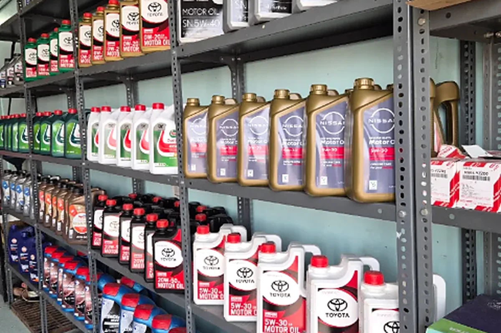

لماذا زيت المحرك مهم؟
زيت المحرك يصنع طبقة تزييت بين الأجزاء المعدنية المتحركة، ويساعد على تقليل الاحتكاك والحرارة الناتجة عن الحركة المستمرة. كما يحمل جزءاً من الرواسب والجزيئات الدقيقة إلى الفلتر ويساهم في إبقاء العمل الداخلي للمحرك أكثر انتظاماً. مع الاستخدام يتعرض الزيت للحرارة والأكسدة والتلوث، وقد يفقد تدريجياً جزءاً من خصائصه. لهذا السبب يكون تغيير الزيت والفلتر في الوقت المناسب جزءاً أساسياً من الصيانة الدورية، وليس مجرد إجراء تجميلي أو خدمة اختيارية.
لا يوجد موعد واحد يناسب كل السيارات
أفضل نقطة بداية لمعرفة موعد تغيير الزيت هي دليل المالك أو جدول الصيانة الخاص بسيارتك. الشركة المصنعة تحدد المواصفة المناسبة للزيت وطريقة متابعة الصيانة وفق تصميم المحرك. بعض السيارات تعتمد أيضاً على مؤشر صيانة أو نظام يحسب عمر الزيت بحسب ظروف التشغيل. من المهم اتباع ما ينطبق على سيارتك بدلاً من الاعتماد على نصيحة عامة أو رقم متداول بين السائقين، لأن محركين مختلفين قد تكون لهما متطلبات مختلفة تماماً.
ظروف الاستخدام اليومية قد تجعل فحص الزيت أكثر أهمية حتى قبل موعد الصيانة المخطط. القيادة في الحرارة العالية، الوقوف الطويل في الزحام، الرحلات القصيرة المتكررة، تشغيل السيارة لفترات طويلة، أو الاستخدام الذي يتضمن تحميل السيارة ومشاوير متكررة كلها عوامل تضع المحرك والزيت تحت ظروف تشغيل مختلفة. هذا لا يعني أن هناك قاعدة واحدة تقول إن الزيت يجب تغييره بعد عدد محدد من الكيلومترات في الجو الحار؛ المعنى العملي هو أن السائق يحتاج إلى متابعة الحالة ومستوى الزيت والرجوع إلى تعليمات السيارة وعدم تأجيل الصيانة عندما تظهر مؤشرات واضحة.
علامات تستحق الانتباه
انخفاض مستوى الزيت
من العلامات التي تستحق الانتباه تغير مستوى الزيت. إذا لاحظت عند الفحص أن المستوى منخفض، لا يكفي أن تضيف الزيت وتنسى الموضوع دائماً. الانخفاض قد يكون بسيطاً وطبيعياً في بعض السيارات، وقد يدل أحياناً على استهلاك أو تسريب يحتاج إلى فحص. افحص السيارة وهي على سطح مستوٍ واتبع طريقة القياس المناسبة لها، لأن طريقة قراءة العصا أو النظام الإلكتروني تختلف من سيارة إلى أخرى. إذا كان المستوى ينخفض بصورة متكررة، فالفحص أفضل من الاستمرار في الإضافة فقط.
لون الزيت وحالته
لون الزيت وحده لا يحدد موعد التغيير. من الطبيعي أن يصبح زيت المحرك أغمق مع الاستخدام لأنه يتعامل مع نواتج الاحتراق والرواسب، لذلك الزيت الداكن ليس دليلاً قاطعاً بمفرده على أن الزيت تالف. لكن إذا لاحظت تغيراً غير معتاد في القوام، أو رائحة قوية مختلفة، أو شوائب واضحة، أو كان الزيت أقل من المستوى المطلوب، فهذه أسباب جيدة لطلب فحص مهني. المهم هو الجمع بين حالة الزيت، سجل الصيانة، تعليمات السيارة وأي أعراض أخرى تظهر أثناء القيادة.
لمبة الزيت
لمبة الزيت تحتاج اهتماماً خاصاً. بعض السيارات لديها لمبة ضغط زيت، وبعضها يعرض تنبيهاً لمستوى الزيت أو للصيانة. إذا ظهرت لمبة ضغط الزيت أثناء القيادة، لا تتعامل معها كتنبيه صيانة عادي يمكن تأجيله؛ انخفاض ضغط الزيت قد يعرّض المحرك للضرر. اتبع تعليمات سيارتك وتوقف بأمان عند الحاجة واطلب الفحص. أما تنبيه الصيانة أو عمر الزيت فيجب قراءته وفق دليل السيارة وعدم الخلط بينه وبين تحذير ضغط الزيت.
أصوات المحرك غير المعتادة
الأصوات غير المعتادة من المحرك قد يكون لها أسباب كثيرة، والزيت واحد فقط من الاحتمالات. صوت الطرق، التكتكة المرتفعة أو خشونة جديدة في التشغيل لا تعني تلقائياً أن الحل هو تغيير الزيت، لكنها تستحق الفحص خصوصاً إذا تزامنت مع انخفاض المستوى أو إهمال الصيانة. إضافة زيت غير مناسب أو محاولة تشخيص الصوت من دون فحص قد تخفي المشكلة مؤقتاً أو تزيدها. الأفضل تحديد السبب قبل اتخاذ قرار الصيانة.
الفحص الدوري أهم من التخمين
عملياً، احتفظ بسجل بسيط لآخر تغيير زيت ونوع الزيت والمواصفة المستخدمة، وافحص المستوى من وقت لآخر بالطريقة التي توصي بها السيارة. إذا كنت لا تعرف تاريخ الصيانة، أو اشتريت سيارة مستعملة، أو لاحظت تسريباً، تنبيهاً في لوحة العدادات أو تغيراً واضحاً في التشغيل، اطلب فحصاً بدلاً من التخمين. الفحص الدوري يساعدك على معرفة الحالة الفعلية ويمنع الاعتماد على أرقام عامة قد لا تناسب سيارتك.
فلتر الزيت جزء من الصورة أيضاً. وظيفته التقاط كثير من الشوائب التي يدور بها الزيت، ولهذا يرتبط تغييره عادة بصيانة الزيت وفق متطلبات السيارة. استخدام فلتر غير مناسب أو تركه لفترة أطول مما توصي به الصيانة قد يقلل من كفاءة دورة التزييت. عند تنفيذ الخدمة، من المفيد التأكد من مستوى الزيت بعد التشغيل ومراقبة عدم وجود تسريب حول الفلتر أو مسمار التصريف. هذه الخطوات البسيطة تساعد على اكتشاف خطأ مبكر قبل أن يتحول إلى فقدان ملحوظ للزيت.
كذلك لا يكفي اختيار الزيت بناءً على الاسم أو السعر فقط. اللزوجة والمواصفة المطلوبة تختلف حسب تصميم المحرك، وبعض السيارات تحتاج مواصفات محددة لحماية أنظمة المحرك والعادم. إذا لم تكن متأكداً، استخدم المعلومات الموجودة في دليل السيارة أو بيانات الصيانة الموثوقة. مزج أنواع أو مواصفات مختلفة من دون حاجة ليس طريقة جيدة لتعويض تأخر الصيانة؛ الأهم هو استخدام المنتج المناسب والحفاظ على مستوى صحيح ومتابعة التغيير في موعده.
الخلاصة أن موعد تغيير زيت السيارة يختلف، ولا توجد مسافة ثابتة تناسب الجميع. ارجع إلى دليل المالك، راقب تنبيهات السيارة، انتبه لمستوى الزيت وحالته، وخذ ظروف الاستخدام في الاعتبار. الصيانة المنتظمة واتخاذ القرار بناءً على حالة السيارة أفضل من الانتظار حتى تظهر مشكلة كبيرة أو تغيير الزيت مبكراً بلا حاجة. إذا كان لديك شك، يمكن لفحص بسيط أن يوضح الخطوة المناسبة.
تحتاج تغيير زيت أو فحص سيارتك؟ تواصل مع محطة البطين لخدمات السيارات في العين.
الهاتف وواتساب: 050 137 5455 — يومياً من 9:00 صباحاً حتى 11:00 مساءً.